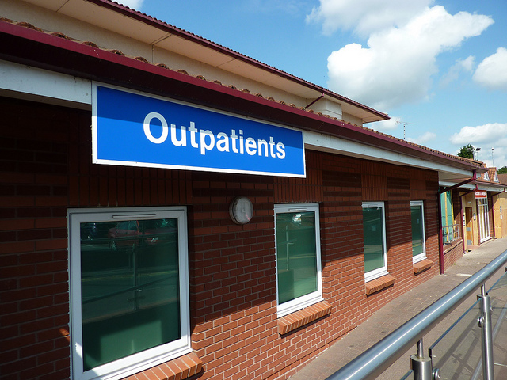
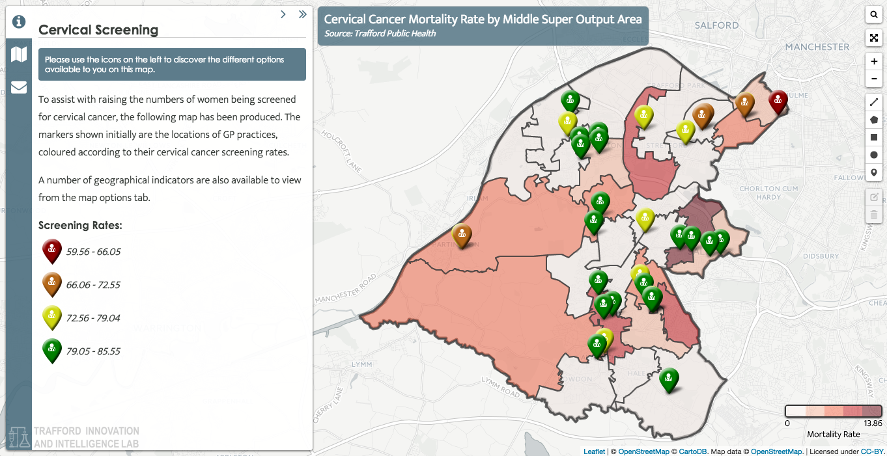

Case study: How Trafford Innovation and Intelligence Lab raised cancer screening rates
By collecting cervical cancer screening data from across Trafford and combining it with demographic data, Trafford Innovation and Intelligence Lab discovered screening rates were particularly low in deprived communities. With this knowledge, they were able to design and implement a low-cost, highly targeted campaign to raise screening rates.
- Summary
- Facts and figures
- What is the challenge?
- How are they solving the problem?
- What was the impact of taking this approach?
- What lessons did they learn?
- Technology and data
- People and organisations
- Processes and collaboration
- How to cite this case study
 Trafford Innovation and Intelligence Lab used data to identify communities with low screening rates to help create a targeted campaign. CC BY 2.0, uploaded by Lydia.
Summary
Over the past few years, responsibility for public health has been increasingly devolved to local authorities. One of their key functions is to provide preventive care measures, such as cancer screening. Effective preventative care is linked to much lower health expenditure and improved health outcomes in the long-run.
However, due to budget constraints, much of the UK, including Trafford, has seen a steady decline in cancer screening rates, particularly in the case of cervical cancer.
To tackle this decline, Public Health Trafford and the local Clinical Commissioning Group (CCG) enlisted the help of the Trafford Innovation and Intelligence Lab to help them better understand the problem and explore potential solutions. The Trafford Innovation and Intelligence Lab, established in 2014, brings together data and information specialists from the various organisations that work in Trafford, to work on specific problems.
By collecting screening data from across the city, combining it with demographic data from the Office of National Statistics (ONS) and analysing it, they began to see trends emerging. They discovered screening rates were particularly low in some of the more deprived communities in North Trafford. With this knowledge, they were able to design and implement a low-cost, highly targeted campaign to raise screening rates.
They did this with the help of The Voice of BME Trafford (VBME), a community support group who work in many of the communities with the lowest screening rates. By effectively using available data and data analytics – teaming up with experts and collaborating with active local groups – Trafford has been able to reverse the declining cervical cancer screen rates using minimal resources.
Facts and figures
- Cervical cancer screening rates have been in a steady decline across the UK. In Trafford, Public Health Trafford and the Trafford Clinical Commissioning Group needed a low-cost, high-impact solution to this problem
- They engaged the Trafford Innovation and Intelligence Lab to collect, combine and conduct detailed analysis on data related to cervical cancer screening rates
- This data informed a highly-targeted campaign that also enlisted the help of The Voice of BME, a local community support group
- The campaign improved screening rates by up to 9% in some GP practices and the average screening rate across Trafford rose above the national target of 80%
What is the challenge?
Local councils are responsible for improving living conditions in their communities – including better public health. Preventive care measures such as cancer screenings are important to identifying cancer risks early, increase the success of health interventions – and, finally, reduce the treatment costs incurred by the public.
In 2013, cervical cancer was the 12th most common cancer among women in the UK. Caused by the human papilloma virus (HPV), it can however also be monitored well and identified early. Women who receive treatment after being diagnosed with stage 1 cancer usually have an 80-99% chance to live for at least five more years. An important detail is that 47% of women who develop cancer have not been screened in the past five years or have never been screened in the UK and this group is more likely to have advanced cancer. Therefore, women in the UK receive invitations to regular screenings – every three or five years depending on age group.
Broadly, the UK’s cancer screening program has been a success. In 2008, 20 years after the programme’s introduction, cervical cancer incidents had almost halved to 8.3 cases per 100,000 females. Taking a closer look, however, shows that these reductions do not apply across the entire female population. The years between 1998 and 2008 saw a 77% increase in the incidence rate for women aged 25-29, with 281 cases in 2008. In 30-34 year old women, the rate increased by 29% over the same period, with 309 cases in 2008.
To reduce cervical cancer rates, therefore, regular screenings are of vital importance. But despite strong evidence on the importance of these preventative care measure, achieving high screening attendance rates across the entire female population is not as straightforward as it seems.
For many local councils, such as Trafford, this is only where the difficulties begin: population-wide screening rates of women who have been screened at least once in the past five years reached a high of 80.6% in 2004 – but since then, they slowly dropped to 77.8% in 2014. Particularly in the age groups of under 35-year-old women, health professionals have seen a decline of screening rates since 1995 across the country. In 2010, nation-wide screening rates reached around 64% for 25–29-year-old women and around 74% for the cohort of 30–34 years.
Across the UK and within different cities, screening rates can vary widely. However, regional differences between different parts of Trafford were profound: while some GP practices achieved screening rates well above the national target of 80%, surgeries in the more deprived northern areas of Trafford fared substantially worse. Particularly in the deprived neighbourhoods that had a high black and minority ethnic population (BME), local GP surgeries did not reach screening rates above 70% and in one case even dipped below 60%.
Earlier studies have identified various factors influencing women’s likelihood of following through on screening invitations. Generally, BME women are found to have lower pickup rates for cancer screenings. Poor knowledge about the issue, underlying health and cultural beliefs, attitudes, and language barriers are only some of the factors that have been identified to have a negative impact on screening attendance. In previous studies, pre-appointment reminders by GPs as well as translated information leaflets had positive effects on attendance rates. However, without knowing which areas and communities to target, such campaigns can be ineffective and expensive.
Similar to other local councils in the country, Trafford therefore faced a dilemma: how could they design and implement an effective campaign to raise cervical cancer screening rates in the area?
How are they solving the problem?
To increase the impact of cervical cancer screening invitations, Trafford needed a targeted, effective approach at a low cost. The city opted for a data-driven, collaborative solution to better understand screening rate patterns in the city area and deliver an effective campaign through trusted local partners.
Using a data-driven and open approach proved critical to the project’s success in two ways. First, the relevant data for a street level view of screening rates was highly dispersed. Unearthing insights that provided this granular view of screenings in Trafford meant integrating and processing data from various sources, including open data and personally identifiable information. Second, the city agents of Public Health Trafford, who were implementing the campaign, relied on local partners to effectively deliver their messages to the affected communities. Cervical cancer is a sensitive health issue and therefore reaching out successfully to non-screeners requires partners who understand the concerns of and are trusted by local communities.
Accordingly, the project was split into two major phases focusing on data analysis and campaigning, running from 2014 to 2015. In the first phase, the project group aimed to understand screening patterns better through population mapping and comparisons. For this, the Trafford Innovation and Intelligence Lab first created an interactive map tool, overlaying individual screening rates data from GPs with small area demographic information derived from open data (see figure 1).
 Figure 1: Trafford cervical cancer screening map tool
Through this tool, the project leads from Public Health Trafford as well as representatives from the Clinical Commissioning Group were for the first time able to easily identify areas with particularly low screening rates. While the mapping of data was relatively straightforward, gathering the relevant data required extra effort, according to Helen Gollins, consultant at Public Health Trafford. After the 2012 healthcare reform, data collection and accessibility changed dramatically, affecting the work of local Public Health trusts and local CCGs. Relevant cancer screening data was only available to the NHS Trafford CCG annually and was geographically quite broad. However, a more detailed analysis could only be conducted based on postcode-level data, which the CCG retrieved separately in collaboration with local GPs. Strikingly, this revealed an almost perfect triangle of streets in North Trafford with very low screening rates. After mapping this data and overlaying it with several demographic indicators available from Trafford’s open data, it became clear that the identified area was both deprived and had a high BME population.
The most critical outcome of this work was that this evidence allowed the involved partners to develop and agree upon a suitable strategy to target these local communities. From an operational perspective, the Trafford CCG and Public Health, were also able to better plan individual measures to deliver the campaign in the second phase. As a result, project partners decided to focus on producing translated leaflets only in Somali, Farsi, Urdu and Arabic – in addition to the standard English version.
In the second phase, the city ran a multi-channel campaign and also commissioned several external partners to raise awareness about cervical cancer screenings with the hope of increasing screening rates. The campaign focused on three patient groups: all women ages 25-64; BME women in the same age range; and women who were at a high risk of deprivation. As part of the general efforts to raise screening rates, the project delivered a local campaign entitled Only Takes A Minute, a social media campaign, placed press stories about cervical cancer survivors, and sent out a survey to explore barriers to screening.
But to target BME and deprived women, the project group had to take more specific measures. Monthly screening uptake data, which was retrieved by the CCG for the duration of the project, showed that some practices in more deprived areas did not see higher screening uptake rates. Accordingly, CCG and Trafford Council together with Bridgewater Sexual Health Service ran additional community clinics in March 2015. Furthermore, the Old Trafford Community Initiative conducted classes with health improvement officers and over 280 attendees, to target groups in the Old Trafford area which were typically attending less or no screenings.
An approach based on more granular data analytics was additionally taken in collaboration with the Voice of BME Trafford (VBME). Critically, the project group of Trafford CCG and Public Health informed VBME which specific streets and GPs had seen specifically low screening uptake rates. Based on this information and funded through the ‘Saving Lives’ program, a local VBME outreach worker undertook a four-week intensive campaign, working together with three GP practices with low uptake rates and high BME practice population. The worker phoned more than 170 women who were in need for a smear test and booked 135 smear appointments as a result. Additionally, the community outreach group also ran focus groups and distributed more than 500 multilingual leaflets on the importance of cervical screening to target roads in Stratford and Old Trafford, where low uptake had been identified.
What was the impact of taking this approach?
Following the campaigning efforts, cervical cancer screening rates across Trafford increased above the national goal of 80% screening coverage. In March 2015, before the end of the campaign, the lowest screening take up in any Trafford GP practice was around 66% and the highest around 86%.
Targeting specific GPs and communities with previously low uptake rates and high BME populations also resulted in improvements in specific areas covered. Three out of four practices in North Trafford that previously had both the lowest uptake rates and the highest BME practice populations saw substantial improvements in uptake rates between June 2014 and March 2015. The North Trafford Group Practice saw an increase of 3.96%; the Brooks Bar Medical Centre achieved a 5.60% increase; and screening rates at the Ali Medical Practice were raised by 8.55%. When compared to the other localities it is noticeable that these three practices also showed the greatest average percentage improvement of GPs in all Trafford boroughs.
Additionally, the intense community outreach work helped to secure in-depth insights on why women in the affected areas were not attending screenings. Some declared for example that religious beliefs prevented them from attending screenings. Frequently, patients also said that they had not attended screenings because they thought these were only relevant to sexually active women. This qualitative evidence can help to inform future efforts to further increase or maintain screening rates. For example, it can help to draft more targeted leaflets or improve trainings for GP administrators (who are usually tasked with phoning up non-screeners).
What lessons did they learn?
Retrospectively, Trafford’s project to raise cervical cancer screening rates proved to be successful because of three main elements: the effective use of technology and data, cross-organisational data handling and data processing, and collaboration with local communities and stakeholders.
Technology and data
To integrate, share and analyse data in effective and responsible ways was a crucial success factor for Trafford’s cervical cancer screening campaign. Generally, delivering high-quality health services requires robust data management systems with, ideally, strong and flexible data sharing and analysis capacities. In reality however, two major factors complicate these aspects.
First, the UK’s health system has recently seen a rapidly increased fragmentation. Particularly the Health and Social Care Reform Act (2012), has not only led to an increased devolution, but also a fragmentation and limitation of data access. In the case of cancer screening, only annual screening data remained available to local health trusts – by far not granular enough to steer a targeted campaign as in Trafford’s case.
Second, even where data is available and can be retrieved in more granular or timely detail, it might have limited utility to the task at hand. This can be simply due to the processes of data collection which implicitly have certain limitations. In Trafford’s case, the local CCG and Public Health Trafford extracted, in collaboration with local GPs, monthly data on cervical cancer screenings from the GP’s EMIS healthcare record system. However, this data only allows comparisons with populations that are registered with a GP. For enquiries on sensitive issues in particular, comparisons on a full population basis might be better – simply in order to also uncover some insights on the behavioural patterns who, in this case, are not registered with a GP. Additional demographic information, e.g. on local languages, religious or ethnic affiliations, or the socio-economic status of people, proved particularly helpful to better understand who is affected by low cancer screening rates.
A crucial effort success factor for Trafford’s cervical cancer screening campaign was therefore the collection, refinement, merging, sharing and analysis of data from a variety of resources. Only the blending of data allowed the project leaders to retrieve sufficiently detailed and timely insights in order to run the campaign raising cervical cancer screening rates. Particularly the integration of demographic information from open data allowed to better understand the characteristics of communities where screening rates had been specifically low.
People and organisations
Data retrieval and analysis were however also crucially dependent on some organisational and people arrangements. The success and impact of complex data analytics projects depends first on the acquisition and processing of meaningful data. Accordingly, the close collaboration between the NHS Trafford CCG and Public Health Trafford in order to retrieve data from GPs and then clean it from private or personally identifiable information was paramount to build the project’s primary data foundation. The close and fluent exchange between the CCGH and Public Health Trafford was therefore crucial to implement the project in an agile and non-bureaucratic fashion.
Arguably even more important was the role of the Trafford Innovation and Intelligence Lab. As a data analytics unit, the Lab had been set up by Trafford City Council to increase the council’s use of open data, by supporting other council units or bodies in incorporating open data into their own administrative operations and analyses. In the cervical cancer screening case, the Trafford Innovation and Intelligence Lab helped the CCG and Public Health Trafford to analyse and map screening data from GPs as well as blending it with open demographic data. In numerous other cases, the Trafford Innovation and Intelligence Lab helped Trafford council institutions to deliver better services, by, for example, identifying the most suitable places to install defibrillators across the city.
Sourcing technical knowledge from an established and experienced data analytics service within the council critically improved the project’s chances of success. In particular, it allowed easy access to basic data analytics and mapping capacities. Additionally, it also helped to more easily understand and incorporate open data with data on health records.
Processes and collaboration
Delivering a local campaign on a sensitive health issue to communities that are normally not easy to access is a particular challenge. This was specifically the case in North Trafford, where religious beliefs and language barriers might have kept women away from earlier screenings. Working together with trusted local community groups such as the Voice of BME therefore proved to make it much easier to reach out to these communities and eventually raised the impact of health messages. Driving home the impact of data analytics therefore might require working with established community stakeholders.
A blocker for such co-operations might however often be funding issues. Community organisations and councils often work through equally stretched budgets. In Trafford’s case, funding was thankfully acquired on an ad-hoc basis, but in future projects, it would be beneficial to secure either internal or external funding for such projects from the start.
How to cite this case study
This case study was published in February 2017 by the Open Data Institute.
Please cite this case study as follows: Open Data Institute (2017) Case study: Transport for London. London, UK. Available at ../case-studies/case-study-transport-for-london
Author: Leonard Mack
Editing and production: Alexander Leon
Contact: [email protected]
Supported by